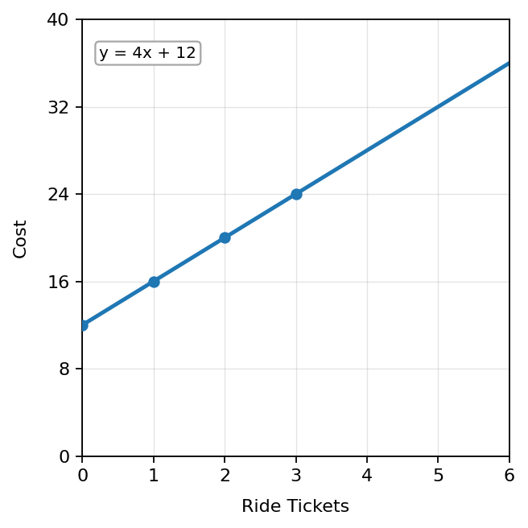
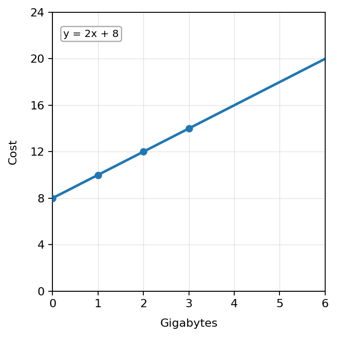
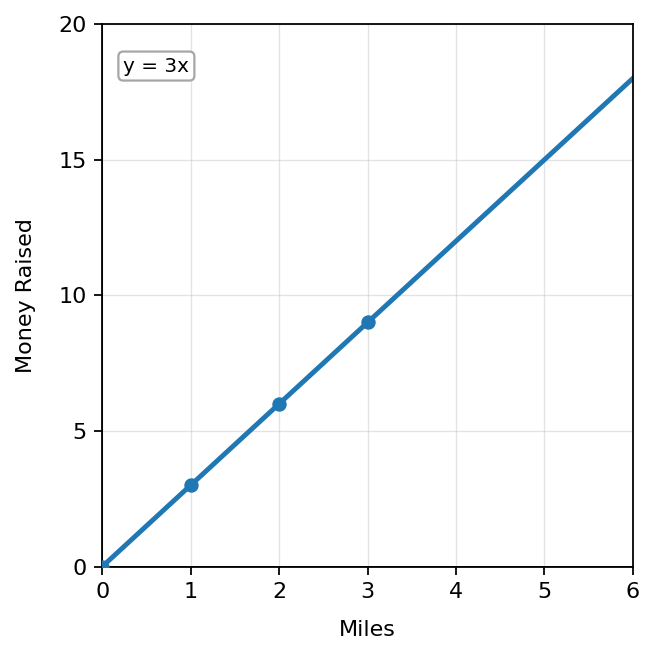
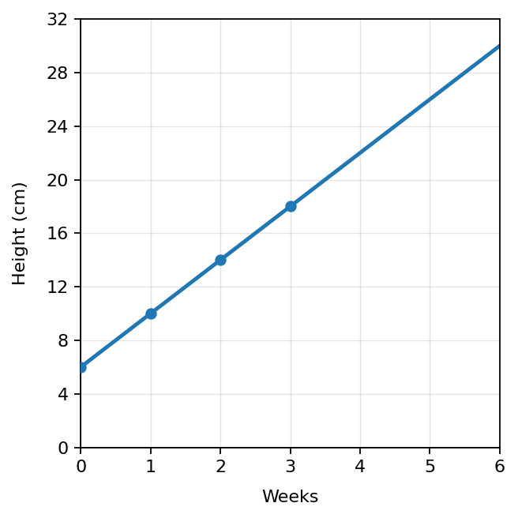
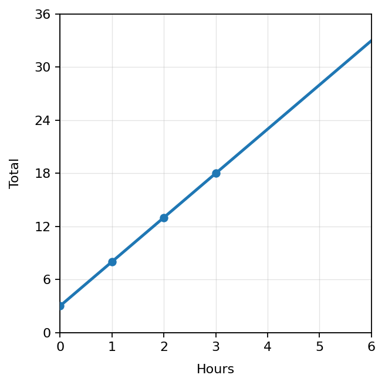

Investigation: The Case of the Missing Representations
Time: 15-20 minutes
Format: Match-up, missing representation challenge, partner talk, and whole-class discussion
Today you will investigate how one relationship can be shown in different ways.
$\text{Context} \qquad \text{Table} \qquad \text{Graph} \qquad \text{Equation}$
By the end, you should be able to explain how you know when different representations describe the same relationship.
Cut apart the cards. Each relationship has 4 cards that belong together: one context, one table, one graph, and one equation.
Admission to the fair is \$12, plus \$4 for each ride ticket.
A phone plan costs \$8 plus \$2 for each gigabyte used.
A student raises \$3 for each mile walked in a fundraiser.
| Miles ($x$) | Money ($y$) |
|---|---|
| 0 | 0 |
| 1 | 3 |
| 2 | 6 |
| 3 | 9 |
| Tickets ($x$) | Cost ($y$) |
|---|---|
| 0 | 12 |
| 1 | 16 |
| 2 | 20 |
| 3 | 24 |
| Gigabytes ($x$) | Cost ($y$) |
|---|---|
| 0 | 8 |
| 1 | 10 |
| 2 | 12 |
| 3 | 14 |



Task: Write an equation that matches the context and table. Then explain how you know.
A water tank starts with 5 gallons. It fills at 2 gallons per minute.
| Minutes ($x$) | Gallons ($y$) |
|---|---|
| 0 | 5 |
| 1 | 7 |
| 2 | 9 |
| 3 | 11 |
Your equation:
Task: Create a real-world context that matches both the equation and the table.
$y=5x+10$
| Input ($x$) | Output ($y$) |
|---|---|
| 0 | 10 |
| 1 | 15 |
| 2 | 20 |
| 3 | 25 |
Task: Create a table and write an equation that match the graph and context.
A plant is 6 cm tall and grows 4 cm each week.

| Weeks ($x$) | Height ($y$) |
|---|---|
| 0 | |
| 1 | |
| 2 | |
| 3 |
Your equation:
Task: Create a context, a table, and an equation that could match this graph.

| Input ($x$) | Output ($y$) |
|---|---|
| 0 | |
| 1 | |
| 2 | |
| 3 |
Your equation:
Use Parts 1 and 2 to complete each statement.
This investigation helps students discover that a relationship can be represented with a context, table, graph, and equation. The main conceptual goal is not formal function notation yet. Students should notice that each representation shows the same connection between changing quantities.
Say: “Today you are solving a matching mystery. Each relationship can wear four different outfits: a story, a table, a graph, and an equation. Your job is to prove which ones belong together.”
Display: Show the table with $x$ values 0, 1, 2 and $y$ values 8, 10, 12. Ask: “What is changing? What stays consistent? What story could this describe?”
Final summary: A relationship can be represented by a context, table, graph, and equation. The representations match when they describe the same changing quantities and the same rule connecting those quantities.
Closure prompt: “Choose one relationship from today and explain how all four representations show the same idea.”
Original question: Cut apart the cards. Each relationship has 4 cards that belong together: one context, one table, one graph, and one equation. Sort the cards into 3 complete sets and explain how you know.
| Set | Context | Table Pattern | Graph | Equation |
|---|---|---|---|---|
| Phone Plan | A phone plan costs \$8 plus \$2 for each gigabyte used. | $0,8$; $1,10$; $2,12$; $3,14$ | phone_plan_graph.png | $y=2x+8$ |
| Walkathon | A student raises \$3 for each mile walked in a fundraiser. | $0,0$; $1,3$; $2,6$; $3,9$ | walkathon_graph.png | $y=3x$ |
| Fair Tickets | Admission to the fair is \$12, plus \$4 for each ride ticket. | $0,12$; $1,16$; $2,20$; $3,24$ | ticket_graph.png | $y=4x+12$ |
Original question: A water tank starts with 5 gallons. It fills at 2 gallons per minute. The table shows 0 minutes gives 5 gallons, 1 gives 7, 2 gives 9, and 3 gives 11. Write an equation and explain how you know.
Answer: $y=2x+5$. The starting amount is 5 when $x=0$, and the amount increases by 2 gallons each minute.
Original question: Create a real-world context that matches $y=5x+10$ and the table $0,10$; $1,15$; $2,20$; $3,25$.
Sample answer: A club charges a \$10 sign-up fee plus \$5 for each class attended. Let $x$ be the number of classes and $y$ be the total cost.
Original question: A plant is 6 cm tall and grows 4 cm each week. Use the graph to create a table and equation.
| Weeks ($x$) | Height ($y$) |
|---|---|
| 0 | 6 |
| 1 | 10 |
| 2 | 14 |
| 3 | 18 |
Answer: $y=4x+6$.
Original question: Use the graph to create a context, a table, and an equation.
Sample context: A bike rental costs \$3 to start plus \$5 for each hour.
| Hours ($x$) | Total ($y$) |
|---|---|
| 0 | 3 |
| 1 | 8 |
| 2 | 13 |
| 3 | 18 |
Answer: $y=5x+3$.